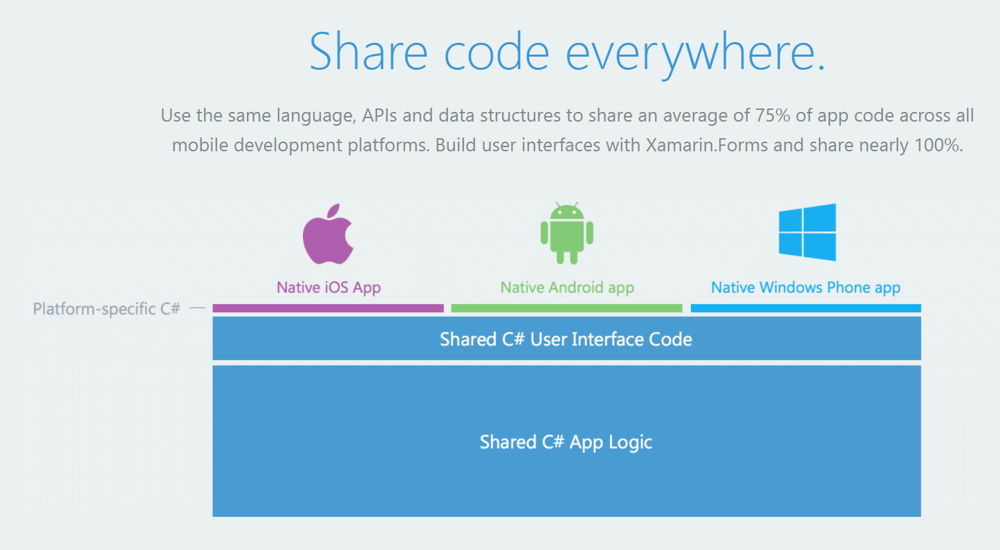
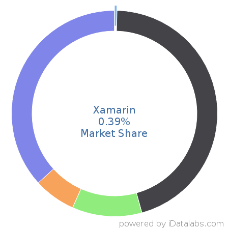

MODE 4201: Lab 2
Mobile Application Development Tool
This lab focuses on researching a specific development tool, which is used to develop applications for various architectures. For the purposes of this lab, Xamarin has been selected. This development tool will be broken down and analyzed in the following headings.
Tool Name
Xamarin (Added as an extension to Visual Studio).
Platform
Xamarin supports iOS, Android, and Windows Phone all in one. The purpose of Xamarin is to make multi-platform development much simpler by creating shared C# code that applies to all of the platforms. While some platform-specific C# is required, the majority of the code can be applied to any of these platforms.
Application Development Type
Xamarin application development is cross-platform, but the actual applications are native. The advantage to this is that native apps allow developers to customize their app to work exactly the way it should on the native device, while also allowing access to the API's of each platform. A disadvantage to this process is that the GUI for each app needs to be designed individually, as none of the apps that get developed are truly multi-platform. As such, while Xamarin is excellent for rapid multi-platform development, it is still important to have experienced developers for each platform to handle the required native code to make the app work properly on the desired platform.
Website
Developers
Xamarin is a proprietary technology, created by the company of the same name. The key developers are Nat Friedman and Miguel de Icaza. Xamarin as a company, however, is a subsidiary of Microsoft and was purchased in 2016.
Release Date
While each individual piece of Xamarin has been added over time, the company was founded in 2011. The first part of the development software was released in 2012, which provided support for Mac based applications. It was not until 2013 that the version of Xamarin used in Visual Studio was released, which was Xamarin 2.0.
License
Xamarin itself is free, however you require a Visual Studio license in order to use the tool. Due to the way Visual Studio handles licenses, you can do personal development for free; however, if you plan to sell any applications you must purchase a Professional or Enterprise Visual Studio license.
Price
Since Xamarin is a free Visual Studio plugin, the only cost to use the tool is to obtain a Visual Studio license.
The three tiers of Visual Studio licenses cost the following:
- Visual Studio Community: Free
- Visual Studio Professional: $45/month
- Visual Studio Enterprise: $250/month
Programming Languages
Xamarin uses C# to develop apps on any of the supported platforms. Even where platform-specific code is required, the code must be written in C#. Xamarin strongly recommends C# as the best language for mobile development, stating "Anything you can do in Objective-C, Swift, or Java, you can do in C#".
Features
The key features of Xamarin are:
- Android and iOS native UI designers
- Native API Access
- Leveraging platform-specific hardware acceleration
- 75% of application code applicable to all platforms
- Additional plugins available to improve efficiency of development
Debugger
As Xamarin is an extension of Visual Studio, the debugger used is built into Visual Studio. Given our experience working with Visual Studio and its prevalence in the software community, this is a very powerful debugging program with a vast list of debugging features not offered in other IDEs.
Built-In Emulator
Visual Studio, and by extension Xamarin, offer "pre-configured virtual devices that appear in the device drop-down menu". As such, using Xamarin allows you to simultaneously develop the application and emulate/test it without having to leave the Visual Studio IDE.
Host Machine Requirements
Xamarin is supported on both Windows and iOS. There are several different tiers of requirements which differ based on the
elements of Xamarin you will be using (Ex: iOS and Android have different system requirements). The host machine must also
be able to run Visual Studio, which has been outlined below:
- Windows 10
- Viual Studio 2015 or 2017
- 1.8GHz processor
- 2GB of RAM
- 130GB hard drive space
- Video card with a minimum resolution of 720p
Integrated Development Environment (IDE)
Visual Studio's standard development environment.
Required Software
Visual Studio 2015 or 2017 is required to use the full capabilities of the Xamarin extension.
Advantages
As outlined previously, the key advantages of using Xamarin is that it allows applications to be developed very quickly
since 75% of the code can be applied to multiple platforms. Additionally, since the applications are developed to be
native, the GUI designer makes it so that the app will look exactly as expected when distributed to the target devices.
Further, Xamarin uses platform-specific hardware acceleration, meaning the app will be as efficient as possible on every
platform it is developed for; this also extends to allowing access to native APIs.

Disadvantages
A key disadvantage of Xamarin is that some native coding is still required in order to finish an application; what this means is that Xamarin based apps are not truly multi-platform. While this slightly increases development time, and requires additional knowledge of each platform, the advantages to using Xamarin outweigh this consequence. Another aspect of Xamarin that could be viewed as a negative is that a paid license of Visual Studio is required to legally profit off of any applications that you develop.
Language Availability
Xamarin relies on Visual Studio to perform localization. Visual Studio supports the following languages:
- English
- Chinese (Simplified)
- Chinese (Traditional)
- Czech
- French
- German
- Italian
- Japanese
- Korean
- Polish
- Portuguese
- Russian
- Spanish
- Turkish
Uploading and Selling and App
Since Visual Studio is the core program, there is no commission given to Xamarin in order to upload and sell an app using this tool. However, as mentioned previously, a paid license of Visual Studio is required in order to legally distribute applications you have developed beyond the scope of personal use. A Community (free) license can be used to distrubute applications for personal or open source use, but any attempt to make profit requires a premium license.
Third-Party Emulator
Since Xamarin uses Visual Studio as its foundation, third-party emulators are not incorporated into the tool. Visual Studio provides an extensive library of emulators that can be used, ranging from phones to tablets to laptops. Within each type, Visual Studio also allows you to emulate using specific versions of a specific platform's OS. As such, Xamarin does not require third-party emulation; in fact, the whole point of Xamarin is to eliminate the need to use additional tools.
Market Share
Xamarin has an estimated 0.39% share of Software Framework selection among public development companies.

Number of Apps Available
The exact number of applications developed using Xamarin remains unknown. Since the apps are developed to be supported on the native platform, it is difficult to isolate apps which were developed using Xamarin as opposed to those developed using the native development tools. Xamarin's website also does not provide an estimate of a possible number either.
Number of Downloads/Users
Xamarin has documented on its website that it has 15,000+ customers. The actual number of downloads is unknown, especially since it is now an option during the Visual Studio installation process.
Example Applications
Some big-name applications developed using Xamarin are:
- MarketWatch (Financial website)
- Kimberly-Clark reduced product proposal time "from 40 hours to 2 hours" with a Xamarin app
- 'Bastion' video game (Converted into an iOS app from console using Xamarin)
Support Offered
Xamarin offers an extensive forum, managed by other Xamarin developers to help troubleshoot problems. Additionally, there is an extensive knowledge-base built into their website, as well as Email support for incidents. Xamarin also offers premium consulting services that can be purchased to have a professional develop help make design and funtion decisions when developing an application. These are typically done through external software companies, and they will assist you in tailoring the application to your needs and guiding you through the development process.
Sources
- Xamarin Home Page
- Wikipedia: Xamarin history
- Visual Studio Pricing
- Xamarin: Emulators
- Visual Studio Requirements and Supported Languages
- Xamarin Market Share
To return to the main MODE 4201 hub, click here or click 'MODE 4201' in the main navigation bar.
To return to the MODE 4201 Lab hub, click here.
To return Home, simply click 'Home' in the main navigation bar.